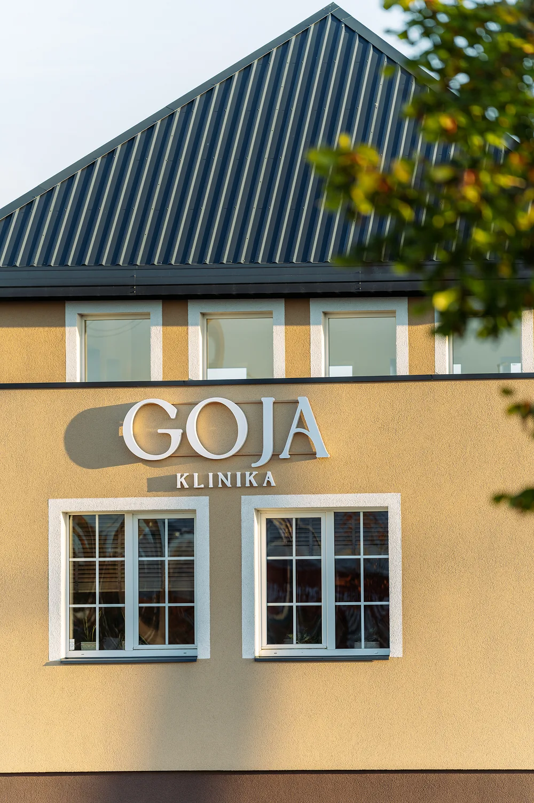
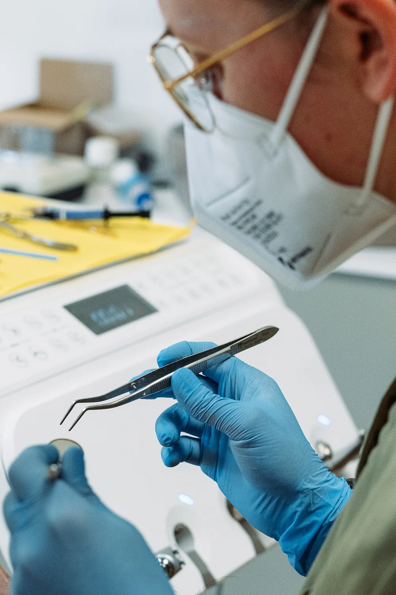
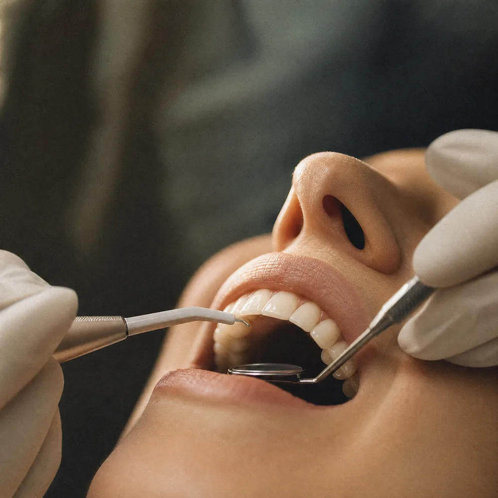
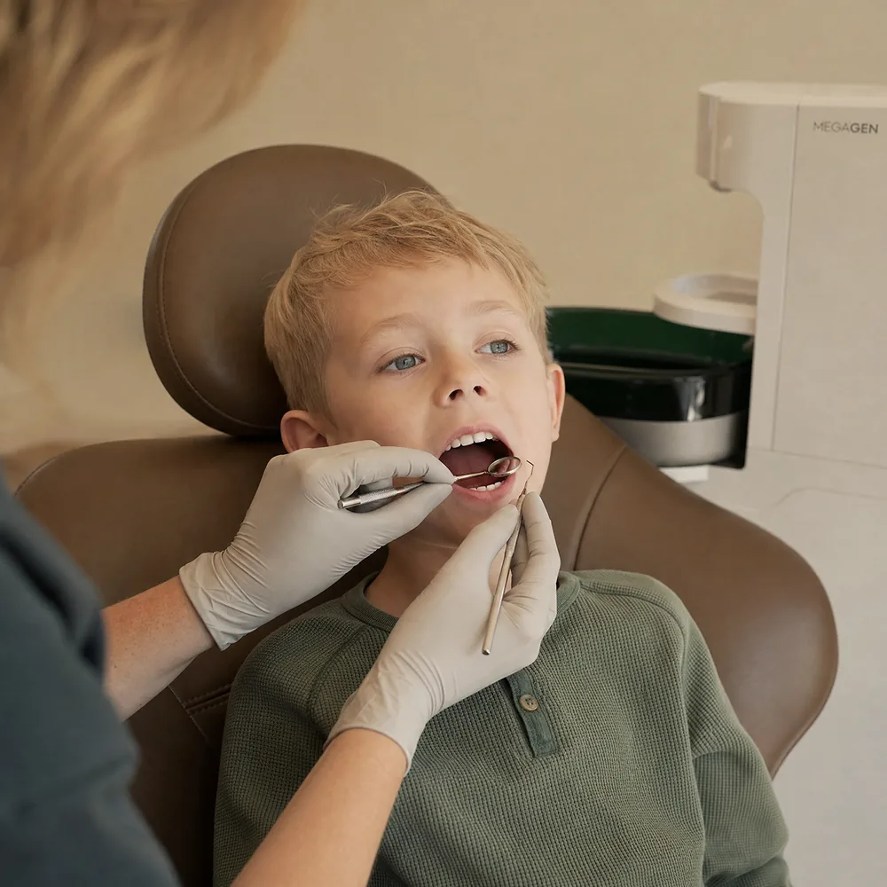
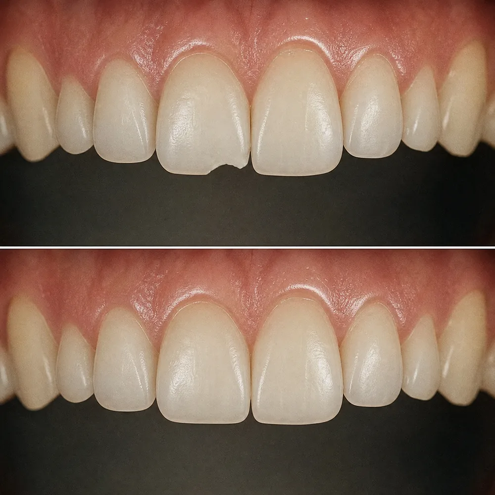
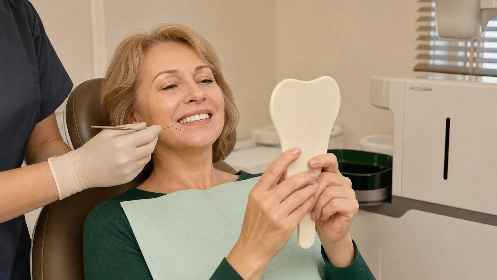
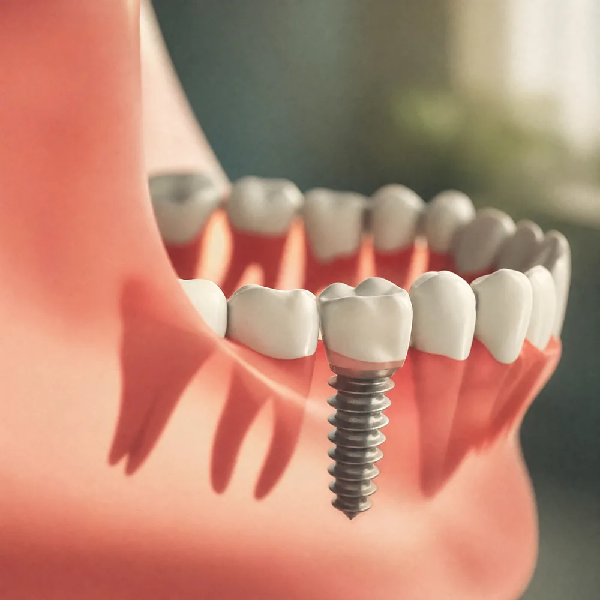
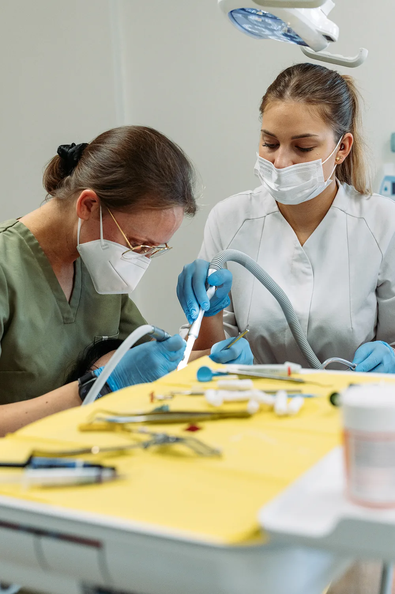
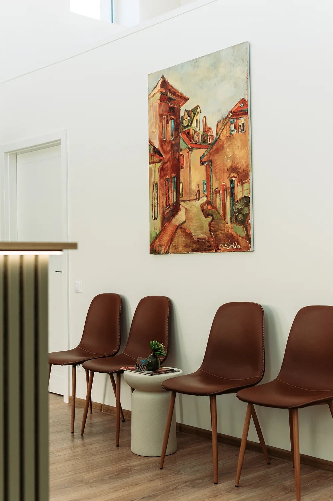
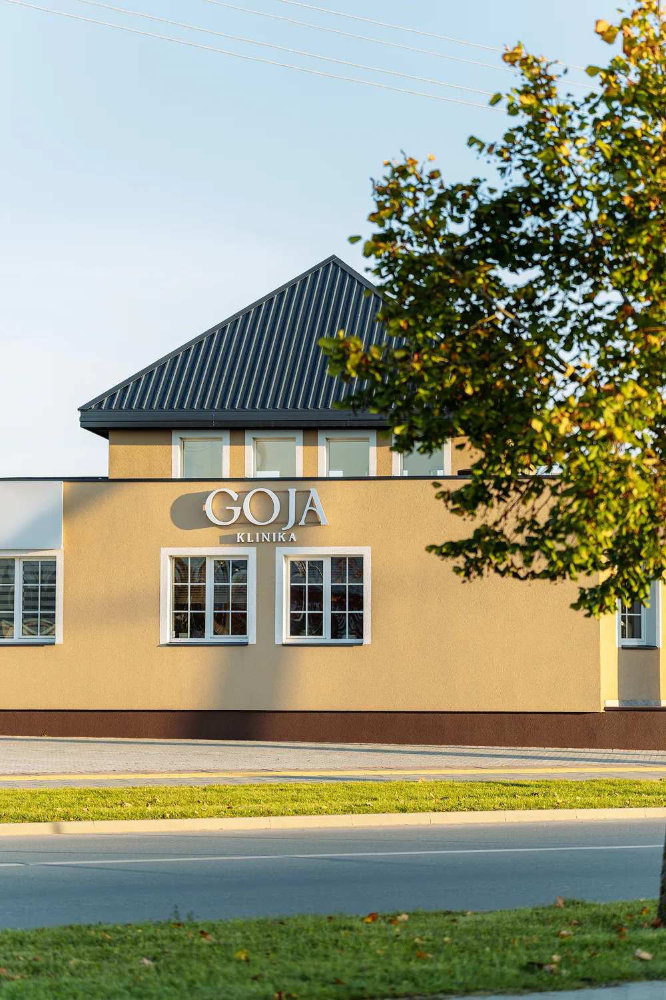

ŠEIMOS ODONTOLOGIJA
Odontologijos klinika Mažeikiuose
GOJA klinikoje rūpinamės vaikų ir suaugusiųjų dantų sveikata. Prieš gydymą aptariame jo eigą ir kainą.
Registruotis vizitui+370 611 80077
I–IV 8–19 val. · V 8–18 val.
PASLAUGOS
Odontologijos paslaugos
Profilaktika, dantų gydymas ir atkūrimas vienoje klinikoje. Pasirinkite paslaugą ir sužinokite daugiau.

Burnos higiena
Apnašų ir akmenų šalinimas, poliravimas ir individualios priežiūros rekomendacijos.
Plačiau apie paslaugą
Terapinė odontologija
Dantų gydymas, padedantis atkurti pažeisto danties funkciją ir išvaizdą.
Plačiau apie paslaugą
Vaikų odontologija
Pažintis su gydytoju ir priežiūra vaikui suprantamu, ramiu tempu.
Plačiau apie paslaugą
Estetinis plombavimas
Dantų formos, spalvos ir nedidelių defektų korekcijos.
Plačiau apie paslaugą
Dantų protezavimas
Prarastų ar stipriai pažeistų dantų atkūrimas.
Plačiau apie paslaugą
Dantų implantacija
Prarastų dantų atkūrimas pagal individualų gydymo planą.
Plačiau apie paslaugą
GYDYMO PLANAVIMAS
Aišku nuo pirmos konsultacijos.
Prieš pradėdami gydymą aptariame, ką ir kodėl siūlome.
Konsultacija ir būklės įvertinimas
Išklausome Jūsų lūkesčius, įvertiname dantų būklę ir aptariame galimus gydymo sprendimus.
Gydymo planas ir kaina
Paaiškiname numatomus gydymo etapus, terminus ir kainą, kad sprendimą galėtumėte priimti turėdami visą informaciją.
Tolesnė priežiūra
Aptariame individualią burnos priežiūrą ir profilaktinius vizitus, padedančius palaikyti burnos sveikatą.


REGISTRACIJA
Susitarkime dėl Jūsų vizito.
Registruokitės arba paskambinkite – aptarsime Jums patogų laiką.
Registruotis vizitui+370 611 80077M. Daukšos g. 19
Mažeikiai
Rodyti žemėlapyjeDarbo laikas
- Pirmadienis–ketvirtadienis
- 8:00–19:00
- Penktadienis
- 8:00–18:00
- Šeštadienis
- Pagal registraciją